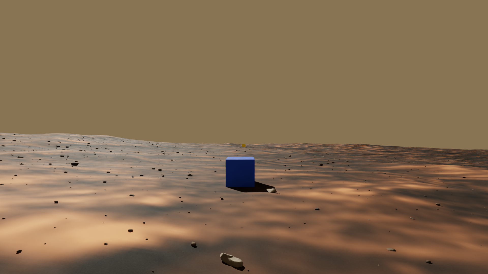
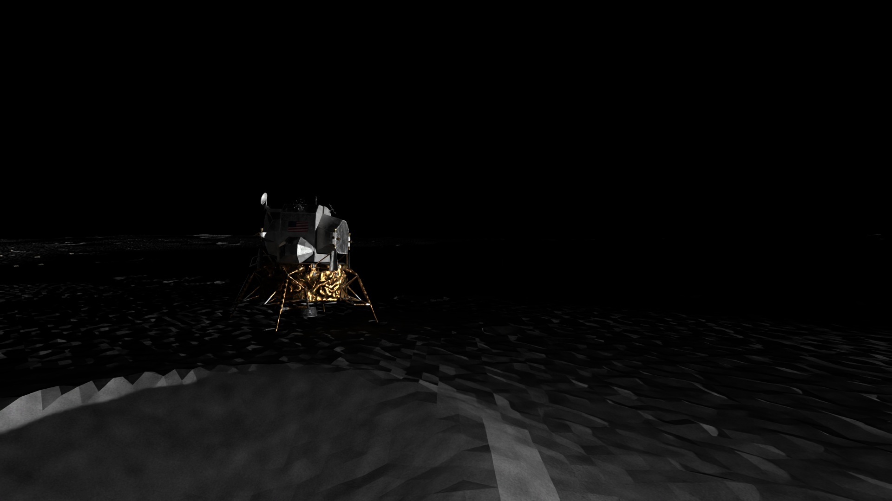
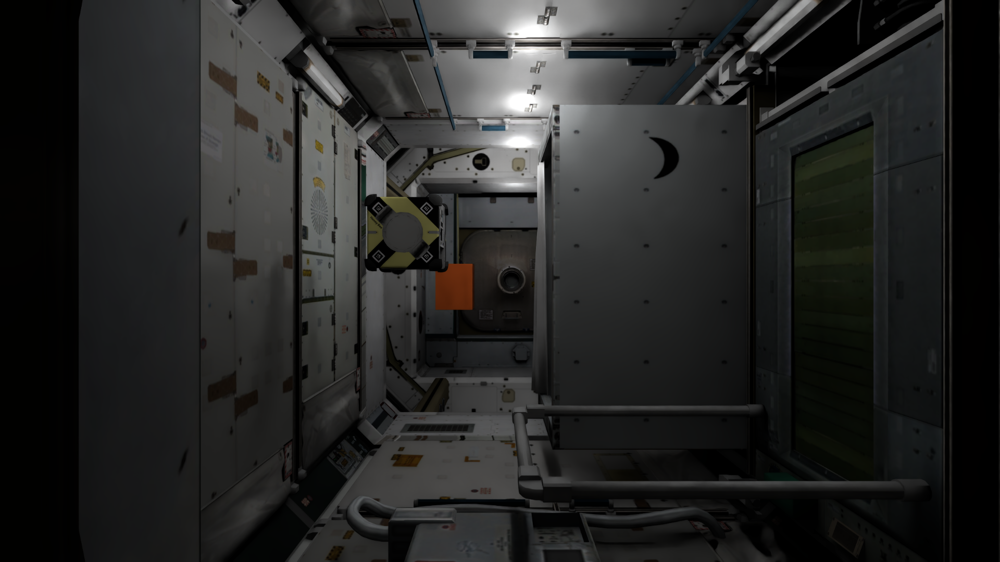
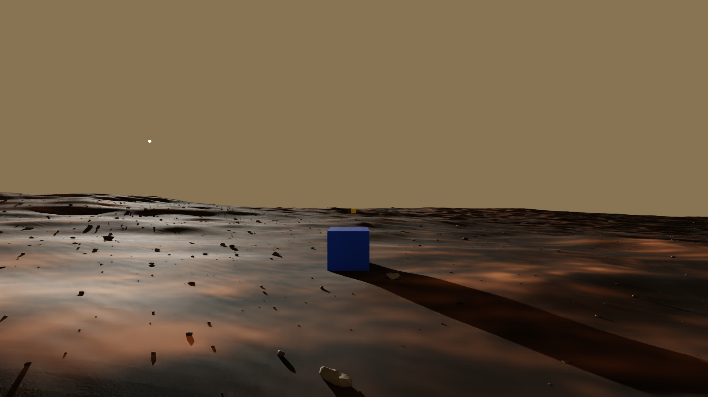
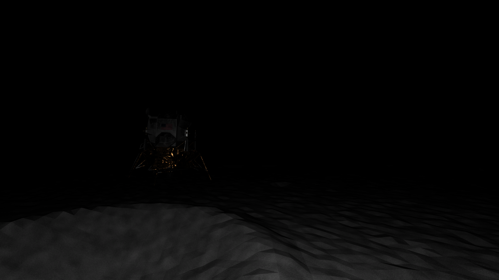
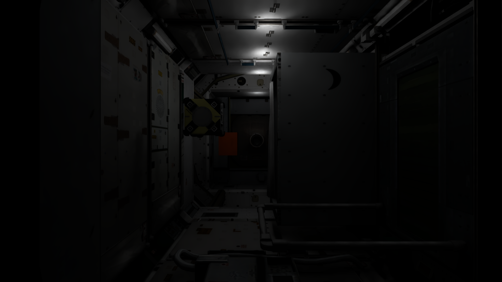

Scripted path
Fixed actions and poses
When a model sees the target,
does it know when to stop?
Visual grounding and semantic stopping along fixed trajectories in simulated space environments.



Actual simulator frames from existing dev routes. Display crops only; paired views below retain the full image.
A target may become visible long before the agent enters its success region. This benchmark separates visual recognition from the downstream decision to stop, using fixed paths and controlled lighting changes.
Mars terrain, lunar shadows and cabin interiors expose different visual conditions. Qwen2.5-VL-3B, Lance_3B and Nova Lite 1.0 each answer the same current-frame visibility question.
The scripted T track controls where images are acquired. TRACE, delay-only and visibility Oracle are replayed using saved evidence. The reported experiments do not evaluate an autonomous navigation policy.
Fixed actions and poses
RGB + target phrase
Correlated Yes / No
Frozen K / q
SR · SPL · queries
Each world contains three scenes and 300 routes. Baseline and second-light data share route IDs, targets, camera settings and split. These examples reuse the existing report illustrations.

Same terrain, target, camera and route; solar elevation changes. The old15° branch is excluded.
mars_a_formal_007 / frame 11
Solar-on is an artificial controlled comparison, not natural lighting inside a geographic permanently shadowed region.
moon_c_formal_003 / frame 11
Paired lighting changes lamp intensity while preserving layout and trajectory. This differs from same-light repeatability checks.
cabin_a_formal_v2_000 / frame 12Main TRACE results use the dev-frozen setting for each world. Every model×world cell contains 240 test routes, paired across lighting. Select a control to inspect the same frozen setting.
−3.66 percentage points overall. Seven groups decrease; two improve. These are descriptive paired differences, not statistical-significance claims.
TRACE · 240 test routes/cell
| World | Judger | Baseline SR | Second SR | Δ pp | Base SPL | Second SPL |
|---|---|---|---|---|---|---|
| Mars | Qwen2.5-VL-3B | 89/240 (37.08%) | 79/240 (32.92%) | -4.17 | 0.371 | 0.329 |
| Mars | Lance_3B | 130/240 (54.17%) | 133/240 (55.42%) | +1.25 | 0.542 | 0.553 |
| Mars | Nova Lite 1.0 | 85/240 (35.42%) | 97/240 (40.42%) | +5.00 | 0.354 | 0.404 |
| Moon | Qwen2.5-VL-3B | 67/240 (27.92%) | 53/240 (22.08%) | -5.83 | 0.278 | 0.221 |
| Moon | Lance_3B | 73/240 (30.42%) | 63/240 (26.25%) | -4.17 | 0.304 | 0.261 |
| Moon | Nova Lite 1.0 | 53/240 (22.08%) | 45/240 (18.75%) | -3.33 | 0.220 | 0.188 |
| Cabin | Qwen2.5-VL-3B | 69/240 (28.75%) | 52/240 (21.67%) | -7.08 | 0.267 | 0.202 |
| Cabin | Lance_3B | 68/240 (28.33%) | 37/240 (15.42%) | -12.92 | 0.263 | 0.145 |
| Cabin | Nova Lite 1.0 | 99/240 (41.25%) | 95/240 (39.58%) | -1.67 | 0.384 | 0.366 |
SR: distance strictly below20m on Mars/Moon and2m in Cabin. Models are assessed on the same route set; Baseline endpoint and Oracle controls repeat across model labels.
TRACE is below delay-only in9/9 baseline and8/9 second-light groups. Consecutive confirmations can trade early stops for late stops.
The visibility Oracle supplies pixel-based labels. It is not a theoretical upper bound on distance-based success.
Completed experiments and acceptance exceptions are reported together. The current release is an independent engineering study with reproducible numerical exports.
180 baseline dev routes. Pose/action prefixes and same-answer replay match180/180; stop frames match164/180. All three models were not rerun online.
83/1086 same-light recaptured frame pairs fall below40dB PSNR. No association/annotation error was found, but cross-process repeatability is not fully resolved.
Cabin capture averages1.273192s/frame within routes. The HTTP-inclusive online loop averages1.840710s. They measure different work.
Nova internals are not independently observable. No historical campaign match, autonomous navigation or real-robot success is claimed. Full datasets and assets are not bundled.
The repository candidate includes core source and the numerical full grid. No model service is needed to inspect the reported results.
Python3.12+ · standard library only. This aggregates saved metrics; it does not repeat inference or rendering.